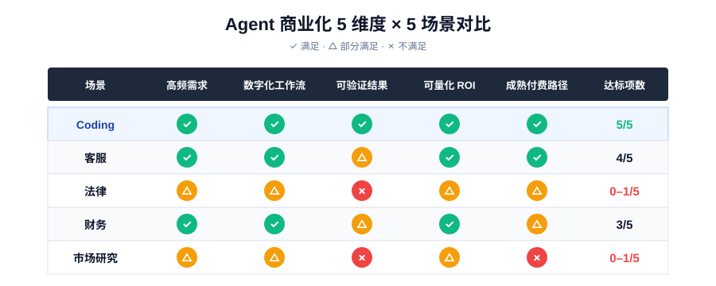

过去一年，关于 Agent 的讨论常常被一种宏大叙事包裹：AI 将拥有长期记忆、使用工具、规划任务、跨系统执行，最终成为"数字员工"。这个方向大概率是对的，但真正的问题不在于 Agent 能不能想象，而在于它能不能被购买、被部署、被信任、被衡量。
从这个标准看，AI Coding Agent 是目前最接近商业闭环的 Agent 形态。
原因很简单：软件开发不是一个普通的知识工作场景。它天然在线，天然结构化，天然有协作流程，也天然有验证机制。代码不是一段主观表达，它最终要被测试、运行、review、merge、上线。正是这些工程机制，让一个"不完全可靠"的 AI Agent 可以被放进一个相对可控的系统里，先创造价值，再逐步扩大自主性。
这就是为什么 Coding 会成为 Agent 商业化的第一站。
评估框架：哪些场景适合 Agent 商业化？
下文会按这 5 个维度逐项论证 Coding Agent 为什么达标，最后用一张矩阵把它和客服、法律、财务、市场研究 4 个常被讨论的场景做对比。
| 维度 | 问的问题 | Coding 凭什么达标 |
|---|---|---|
| 高频需求 | 任务是否每天发生？ | 开发者每天都有大量可委派的代码任务 |
| 数字化工作流 | 任务系统是否在线？ | issue / repo / PR / CI 全部已经在线化 |
| 可验证结果 | 结果对错能否被快速判定？错误能否被拦下来？ | 测试 + CI + review + 灰度发布提供机器 + 人类双重验证 |
| 可量化 ROI | 价值能否落到具体指标？ | 交付速度、修复时间、迁移工期都可计量 |
| 成熟付费路径 | 是否有现成的购买路径？ | DevTools 市场已经跑通 PLG → 团队 → 企业 |
01高频需求：开发者已经把 AI Coding 放进日常
Agent 商业化首先需要一个足够高频的任务场景。低频任务即使能被 AI 自动化，也很难形成稳定使用习惯和持续付费。
软件开发恰好是高频任务密度极高的工作。开发者每天都在写代码、读代码、修 bug、补测试、改文档、查日志、处理 CI 失败、迁移依赖、理解旧系统、回复 review comment。这些任务不一定都复杂，但持续发生，且大量任务可以被拆成明确的输入和输出。
Stack Overflow 2025 开发者调查显示，84% 的受访者正在使用或计划使用 AI 工具，专业开发者中 51% 每天使用 AI 工具。来源：Stack Overflow Developer Survey 2025
JetBrains 在 2025 年开发者生态报告中也披露，90% 开发者在工作中规律使用至少一种 AI coding / development 工具，74% 已采用专门的 AI 开发者工具。其中 GitHub Copilot 工作采用率为 29%，Claude Code 和 Cursor 均为 18%。来源：JetBrains Developer Ecosystem Survey 2025 — AI
这些数据说明，AI Coding 已经越过"尝鲜"阶段，进入开发者日常工作流。
但高频使用 ≠ 盲目信任——这一区分恰好是理解 Coding Agent 商业化的关键。同一份 Stack Overflow 调查显示，46% 的开发者不信任 AI 输出准确性，只有 33% 表示信任，仅约 3% 高度信任。开发者最大的挫败感，是 AI 给出的答案"差一点对，但不完全对"。
所以，Coding Agent 的第一层商业化基础，是开发者真的每天都有大量可委派任务——并且他们会一边用一边盯。
02数字化工作流：软件开发天然适合Agent 接入
光有高频需求还不够。Agent 还需要进入用户已有的工作系统——这是绝大多数 Agent 产品最容易翻车的环节。
很多 Agent Demo 看起来强大，但用户真正使用时会遇到三个问题：我要去哪儿给它任务？它怎么访问我的业务系统？它做完以后，结果怎么进入我原来的流程？
Coding 场景的优势在于，这些问题已经有答案。软件开发有 issue、branch、commit、PR、review、CI/CD、merge、rollback。开发者的工作对象包括 repo、代码文件、依赖、测试、日志、错误堆栈、终端、IDE、文档和运行环境。这些对象大多已经在线化、结构化、可读取、可修改。
GitHub Copilot coding agent 可以从 GitHub issue 被分配任务，完成后创建 pull request。GitHub 也强调，它会进入 draft PR、session logs、branch protection、人类审批和 CI/CD 流程，而不是绕过人类直接合并。来源：GitHub Docs
OpenAI Codex 则被定义为 cloud-based software engineering agent，可以写功能、修 bug、回答代码库问题，并在独立 sandbox 中运行命令、测试、lint 和 type check。来源：OpenAI Introducing Codex
Claude Code 也强调读取代码库、跨文件修改、运行测试和交付代码。来源：Claude Code
这一点对所有 Agent 商业化都有启发。真正可商业化的 Agent，不是"能做很多事"的 Agent，而是"能在某个既有工作流中稳定接收任务、执行动作、产出结果、接受审查"的 Agent。如果你打算做一个 Agent 产品，第一个该问的问题不是"模型能力够不够"，而是"用户当前用什么系统跑这件事？我能不能直接接进去？"
高频需求 + 数字化工作流，解决了"Agent 怎么进入工作"——但还没有回答"Agent 做完事之后怎么被信任"。这就要看下一节。
03可验证结果：测试、PR 和 review 让 Agent 不必完全可靠也能商业化
Agent 商业化最难的，不是生成答案，而是证明自己完成了任务，以及在出错时能及时被拦下来。
软件开发的优势在于，它有一整套成熟的验证 + 拦截机制：
- 机器验证：lint、type check、unit test、integration test、E2E test、CI
- 人类验证：code review、PR diff
- 错误拦截：sandbox、权限控制、灰度发布、rollback、branch protection
这并不意味着代码质量可以被完全自动判断。可维护性、架构合理性、业务语义、长期技术债，仍然需要人类判断。但相比很多知识工作，软件工程至少提供了大量可机器检查的反馈信号，并且有成熟的"踩刹车"机制。
这正是 SWE-bench 重要的原因。SWE-bench Verified 是一个经过人工验证的 500 个真实软件工程任务子集，用来评估 coding agents 和语言模型。它的任务来自真实代码库和真实 issue，要求系统理解问题、修改代码，并通过测试。来源：SWE-bench Verified
这代表了 AI Coding 评测范式的变化：从"模型能不能写出一段代码"，转向"模型能不能在真实工程环境里解决问题"。商业化也在发生同样的变化。
早期 AI 编程工具的核心价值是补全：你写一半，它补一半。现在 Coding Agent 的价值开始转向执行：你描述一个问题，它读取代码库，定位文件，修改代码，运行测试，提交 PR，等待人类 review。
这解释了为什么 Coding Agent 可以比很多通用 Agent 更早商业化。一个商务 Agent 自动发错邮件，一个金融 Agent 错误解释数据，一个客服 Agent 错误承诺政策——后果可能要等到客户投诉、合同出问题、监管关注时才暴露。而 Coding Agent 的错误通常在测试、编译、代码审查、灰度发布中就被拦截了。
换句话说，Coding Agent 的商业化不是建立在"完全自主"之上，而是建立在"受控自主"之上。这是一个被低估的产品哲学：先在有刹车的场景里跑，再扩大自主性，比反过来更可行。
04可量化 ROI：企业已经把研发效率变成 AI 预算
Agent 要商业化，不能只说"体验更好"，还要能回答一个很现实的问题：它到底帮企业省了多少钱，或者多创造了多少价值？
Coding Agent 在这一点上有天然优势。开发者时间昂贵，研发交付周期直接影响产品迭代速度。一个工具如果能缩短从 issue 到 PR、从 bug 到 fix、从需求到原型、从事故到定位的时间，管理层很容易理解它的经济价值。
Menlo Ventures 在《2025 State of Generative AI in the Enterprise》中估算，2025 年企业生成式 AI 总支出达到 370 亿美元，其中应用层支出为 190 亿美元。在按部门拆分的 Departmental AI 类别中，Coding 是最大单项，达到 40 亿美元，占该部门级类别支出的 55%。报告直接将 Coding 称为生成式 AI 的第一个 "killer use case"。来源：Menlo Ventures 2025 State of Generative AI in the Enterprise
这组数据的意义不只是"AI 写代码市场很大"，而是说明企业 AI 应用的第一批真实预算，正在流向软件开发生命周期。
Claude Code 的企业案例也在强化这个方向。Anthropic 官网案例称：Stripe 将 Claude Code 部署给 1,370 名工程师；某团队用 4 天完成原估算 10 engineer-weeks 的 Scala-to-Java 迁移；Ramp 将 incident investigation time 降低 80%。这些是厂商披露，不能当作完全中立的市场数据，但它们说明了企业愿意用什么指标衡量 Coding Agent：迁移工期、事故排查时间、工程师覆盖人数、研发吞吐量。来源：Claude Code
DORA 2025 的结论值得放进来做对照。Google Cloud DORA 把 AI 在软件开发中的角色称为 amplifier：它会放大组织原本的优点和缺陷。AI adoption 不自动等于业务价值，团队结构、平台工程、数据质量、治理流程会决定效果。来源：DORA 2025 State of AI-assisted Software Development Report
Coding Agent 的 ROI 不是"买了工具就自动产生"，而是取决于组织能否把它接进任务分发、代码审查、测试、部署和安全治理流程。这意味着真正能在 Coding Agent 上获利的企业，会是那些已经在 DevOps 和平台工程上投入到位的公司——这也是为什么 Stripe、Ramp 这类工程文化扎实的公司会率先成为标杆案例，而不是工程基础薄弱的公司。
具体到指标，Coding Agent 的 ROI 可以落到：issue 处理时间、PR 周期、bug 修复速度、测试覆盖率、incident investigation time、迁移和重构工期、工程师单位时间产出、技术债清理速度。这些都是 CTO 和工程 VP 已经在跟踪的指标——Agent 不需要发明新的衡量体系。
05成熟付费路径：DevTools 市场已经跑通的飞轮
Agent 商业化的另一个难点是定价。通用 Agent 很难定价，因为它的价值不稳定：今天帮你写邮件，明天帮你查资料，后天帮你订行程。用户很难判断该为它支付多少，企业也很难按部门预算归属。
Coding Agent 不同。它天然落在开发者工具预算、研发效率预算、工程平台预算之中。开发者工具本来就有成熟付费路径：个人订阅、团队版、企业版、seat-based pricing、usage-based pricing、云资源消耗、DevOps 平台、安全扫描、APM、CI/CD。AI Coding Agent 不是从零教育市场，而是在一个已有高付费习惯的开发者工具市场上升级。
GitHub 官方披露，GitHub 拥有超过 1.5 亿 开发者，超过 90% 的 Fortune 100 公司使用 GitHub 协作，超过 7.7 万 组织采用 GitHub Copilot。来源：GitHub Newsroom
Cursor 则展现了典型的 Product-Led Growth 路径：个人开发者先试用和付费，工具进入日常开发习惯后，再扩散到团队和企业。Cursor 官方定价中，Pro 为每月 20 美元，Teams 为每用户每月 40 美元，Enterprise 为定制价格。来源：Cursor Pricing
Menlo Ventures 的报告也指出，AI 应用支出中 PLG 占比达到 27%，约为传统软件的近 4 倍；如果考虑员工使用个人信用卡购买 AI 工具等 shadow AI adoption，PLG 相关占比可能接近 40%。
这意味着 Coding Agent 在企业销售周期还没启动之前，就已经能产生收入和数据，这是其他垂直 Agent 在可预见未来都不容易复制的飞轮。这条路径已经被开发者工具反复验证。AI Coding Agent 只是把它加速了。
06被低估的隐性条件：用户 = 建造者
5 维度框架解释了 Coding Agent 在"商业化基础设施"层面的优势。但还有一个隐性条件，我认为它对解释"为什么是 Coding 先跑出来"同样关键——而且很少被说清楚。
这件事在其他赛道意味不大，但放在 Coding Agent 上，意味着一个非常稀有的产品状态：产品的目标用户、产品经理、开发者，是同一群人。
回想一下其他领域的 AI 产品是怎么被做出来的：
- 做 艺术 / 设计 Agent：需要懂设计的 PM 把审美 taste 翻译成需求文档，工程师再去实现。但工程师本身大概率不是专业设计师，对"什么样算好设计"没有第一手判断。
- 做 教育 Agent：需要懂教学法的产品经理设计互动逻辑，工程师实现。但工程师不是教师，对"什么是好的学习体验"是隔了一层的。
- 做 法律 / 财务 / 医疗 Agent：需要更长的产品链——领域专家给出业务规则、PM 翻译成产品需求、工程师实现、再回到领域专家手里测试反馈。
每多一层翻译，就多一层信息损耗——这是产品工程里最经典的"需求传递断层"问题。
而 Coding Agent 没有这个问题。做 Cursor 的人在用 Cursor 写 Cursor，做 Claude Code 的人在用 Claude Code 写 Claude Code，做 Codex 的人在用 Codex 写 Codex。 工程师对"我每天写代码到底卡在哪儿、什么样的辅助才真正解决问题"有第一性的判断，不需要任何中间翻译。这种 dogfooding 强度在其他垂直场景几乎不存在。
这条隐性优势带来的不只是"产品做得更对路"，更重要的是它影响迭代速度——任何一个团队成员都既是产品决策者又是用户，反馈循环可以在小时级而不是周级跑。这也解释了 Cursor、Claude Code、Codex、Trae 等产品近一年的迭代频率为什么远超传统 SaaS——它们的产品节奏不是被路线图决定的，是被工程师"今天用着不爽"决定的。
用得上 = 产品力 + 迭代速度同时拉满；用不上 = 永远要靠 PM 当翻译，反馈循环至少慢一个数量级。这条不在显性的 5 维度框架里，但它是 Coding Agent 比其他赛道多出来的一档加速器。
07为什么是 Coding，不是其他场景？5 场景对比矩阵
如果只看 Coding 一边的论证，很容易让人怀疑：是不是其他场景也能满足这 5 条？我把另外 4 个常被讨论的垂直 Agent 场景拉出来做对比。打分逻辑：✅ 满足、△ 部分满足、❌ 不满足。

逐个解释打分逻辑：
- 客服：高频、工作流在线（工单系统）、ROI 清晰（人均会话量、解决率）、付费成熟（已有客服 SaaS 市场）。唯一短板是"可验证"——客服回答对不对，往往要等用户投诉、NPS 下滑、退款发生时才知道，没有 CI 这种实时拦截机制。这就是为什么客服 Agent 出错代价更高、推进更谨慎。
- 法律：合同审查、合规检查频次中等，工作流部分在线（很多文件还在邮件、PDF、本地 Word），结果验证依赖律师人工判断（没有"测试通过"这种二元信号），ROI 更隐性，付费习惯偏 top-down 大客户销售。5 项里基本只占 1.5–2 项。
- 财务：高频、工作流在线（ERP、报表系统都在），ROI 看得见。但结果可验证性中等（数据对账可以验，分析判断不行），付费路径是企业采购为主，PLG 几乎走不通。
- 市场研究：低频、信息源高度分散（很多还在 PDF / 网页 / 访谈记录里）、结果几乎无法机器验证（一份分析报告对不对，没有标准答案）、ROI 难量化、PLG 几乎不存在。5 项里只占 1 项左右——这是最不适合先商业化的场景之一。
Coding 是这 5 个场景里唯一 5 项全勾的。客服虽然接近，但卡在"可验证"这一关——而这一关恰好是决定 Agent 能不能"放进流程跑"的最关键一项。这也解释了为什么客服 Agent 已经讨论了三年，但真正大规模替代人工的还很少。
08反面约束：为什么 Coding Agent 还不是自动程序员
如果只写商业化优势，这篇文章会显得过度乐观。Coding Agent 的领先并不意味着它已经可以稳定替代工程师。
METR 2025 的随机对照实验很有提醒意义。研究让 16 位资深开源开发者在他们熟悉的代码库中处理 246 个真实 issue。结果显示，使用 AI 工具反而让他们慢了 19%；但开发者原本预期会快 24%，事后仍认为自己快了约 20%。来源：METR 2025 RCT
这个结果说明，AI coding 并不是在所有场景都提效。资深开发者在熟悉的大型代码库中，可能因为审查、修正、上下文对齐、隐性规范和维护风险而变慢。
这并不推翻 Coding Agent 的商业化逻辑，反而帮我们划清了"它适合落在哪些任务里"——边界清晰、测试充分、规范明确、可回滚、低到中等复杂度、重复性高、容易由人类 review 的任务。例如补测试、修小 bug、迁移依赖、改文档、生成脚手架、排查 CI、做初步重构。
安全是另一个被低估的约束。 当 Agent 能读 repo、跑命令、访问网络、连接数据库、调用 MCP server，它就从"工具"变成了新的攻击面。Trail of Bits 对 prompt injection 到 RCE 的分析、OX Security 对 IDE extension 和 AI coding 工具链供应链风险的研究，都说明企业采购 Coding Agent 时，不只会问"谁写代码更强"，还会追问：能不能 sandbox？能不能限制网络访问？能不能最小权限？能不能隔离 worktree？能不能记录完整操作日志？能不能控制密钥和环境变量？能不能接入现有 CI/CD 和安全扫描？能不能做到人类审批后再执行高风险动作？来源：Trail of Bits、OX Security
09结论与判断：Agent 的第一站，是闭环最完整的场景
AI Coding Agent 的商业化并不意味着程序员会被快速替代。相反，现阶段最成熟的产品形态，仍然是人类定义目标、Agent 执行部分任务、人类审查和合并结果。
真正发生变化的是：软件开发正在从"人手写每一行代码"，转向"人定义问题、拆分任务、审查结果、协调多个智能执行单元"。
这也是 Agent 商业化最现实的路径——不是一开始就追求完全自动化，而是在高价值、高频、可验证的工作流里，先成为一个可信的执行单元。
所以，AI Coding Agent 是 Agent 商业化的第一站，不是因为单一原因——而是三层叠加：代码语言天然规范让它能被做出来；软件工程的任务系统、工具链、验证机制、协作协议、付费路径让它能被卖出去和被衡量；开发者既是用户又是建造者，让它的产品力和迭代速度都被推到了其他赛道难以追赶的水平。任何一层缺失，Coding Agent 都不会是今天我们看到的样子。
数据来源与时效说明
本文数据更新至 2026 年 4 月。主要来源包括：
- Stack Overflow Developer Survey 2025
- JetBrains Developer Ecosystem Survey 2025（AI 章节）
- Menlo Ventures《2025 State of Generative AI in the Enterprise》
- Google Cloud DORA 2025 State of AI-assisted Software Development Report
- METR 2025 RCT（2025 年 7 月发布）
- GitHub Newsroom、Anthropic、OpenAI、Cursor 等厂商公开披露
- SWE-bench Verified、Trail of Bits、OX Security 公开研究
涉及厂商披露的数据（如 Stripe / Ramp 在 Anthropic 案例中的指标）已在文内明确标注为"厂商案例"，不作为中立市场数据使用。